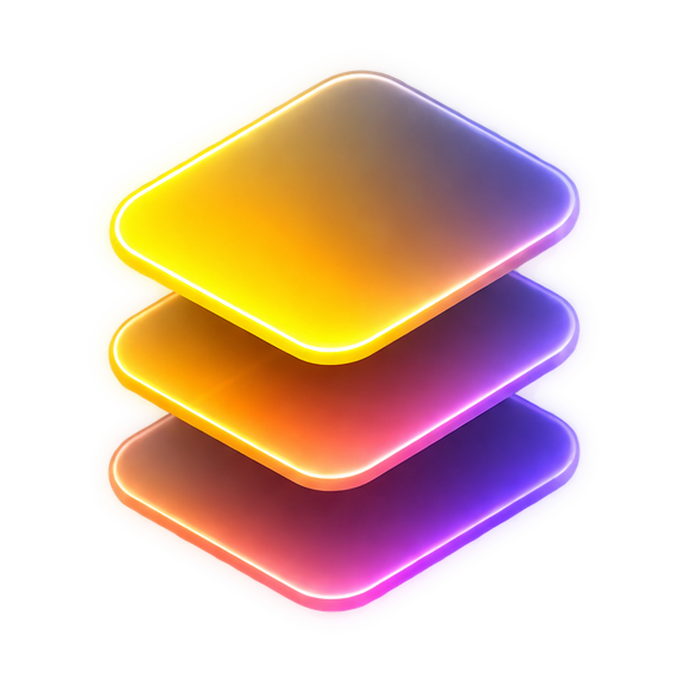
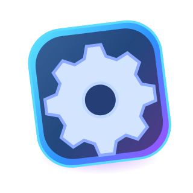
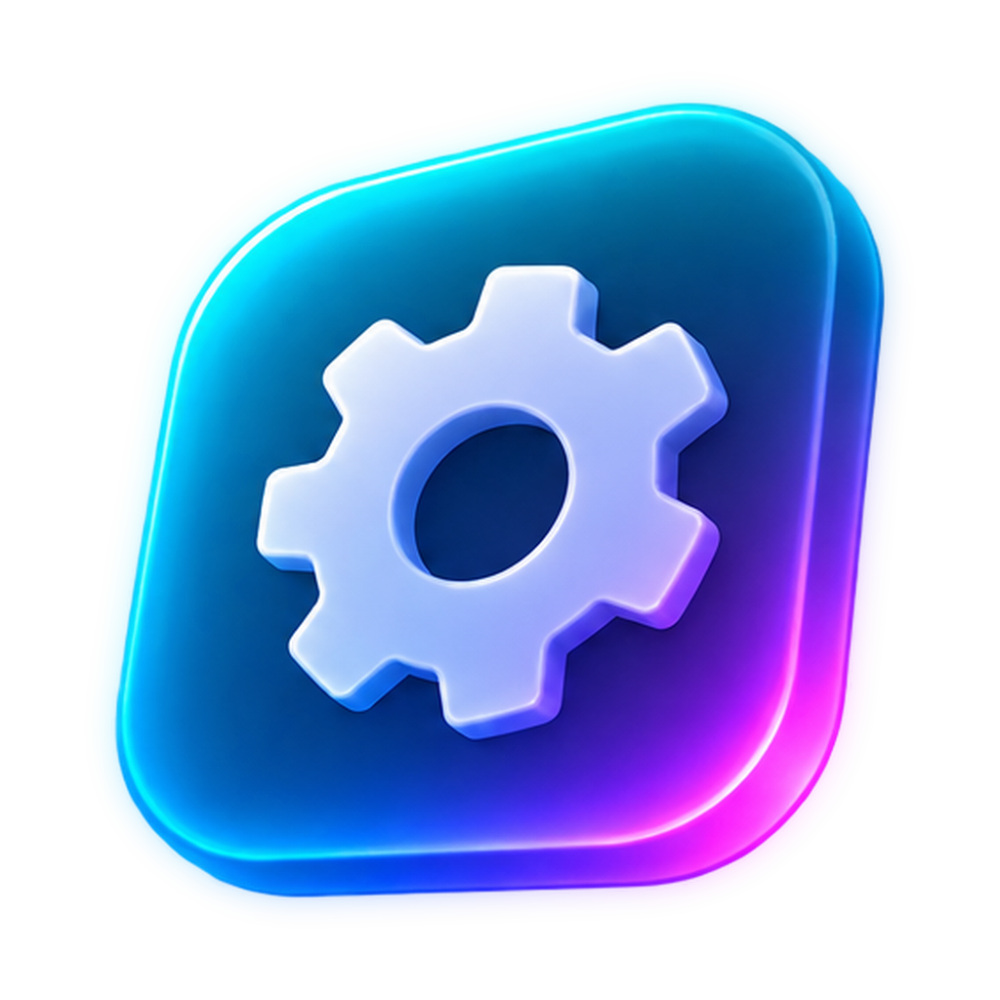

PANDA-SOFTS
Crafting elegant
software components.
Panda-Softs is a software studio and component ecosystem, delivering high-quality libraries, UI components, and developer tools for JavaScript and SwiftUI.
▱ UI Componentsϟ Developer Tools⌘ Open Source◉ Apple & Web
JavaScript
TinySuite Flagship
A lightweight, modern JavaScript suite with practical, high-quality utilities and components.
Explore JavaScript →
SwiftUI
SwiftUI Components
Native, beautiful, and reusable UI components for Apple platforms, built with SwiftUI.
Explore SwiftUI →
Tools / UtilitiesDeveloper Tools
Small, focused utilities that make development and daily work more productive.
Explore Tools / Utilities →
Featured Projects
A curated selection of projects from Panda-Softs.
INDEPENDENT SOFTWARE
Explore reusable components and small, purposeful developer utilities.